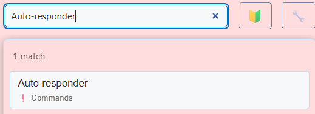
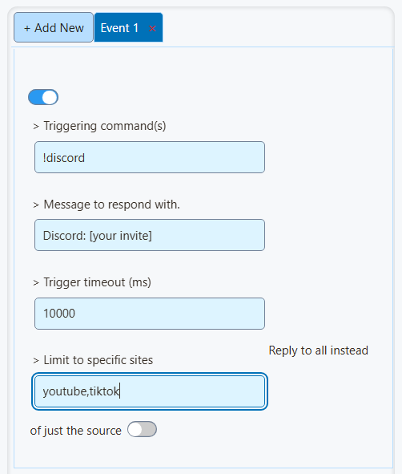
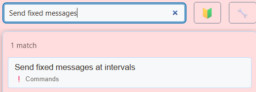
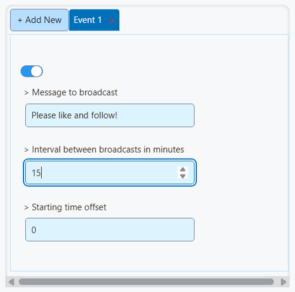
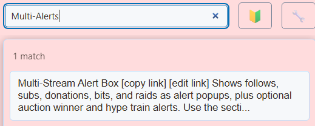
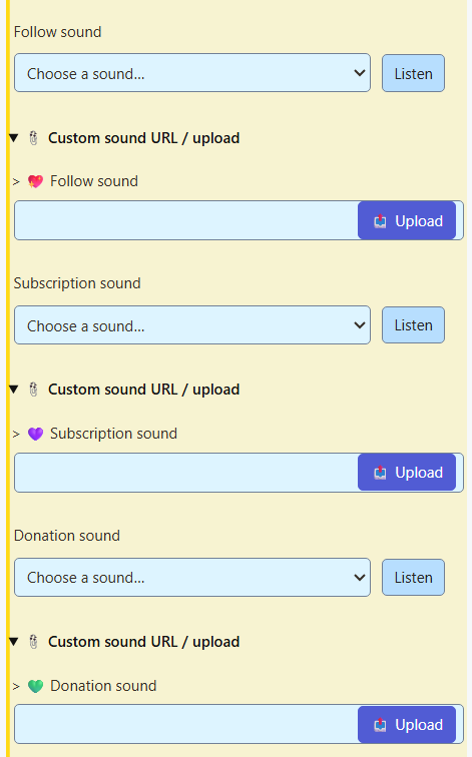

1. Connect your chat
- Open Social Stream Ninja, turn capture on, and connect your live chat.
- Check that a viewer's message appears in your Social Stream chat dock.
- Send a message from the dock to the intended platform. Check that it appears in the platform's own chat.
Need help connecting? Open the setup guides.
TikTok connection modes
Chat replies need a signed-in Standard connection or the desktop app's Local Signer reply path. Compatibility (WebSocket) mode does not send replies. See the TikTok connection guide.
2. Add custom command replies
Use fixed replies for your device, loadouts, social links, or Discord invite. No AI bot is needed.
Search settings...Auto-responder


- Enable a command entry.
- Enter
!discordin Triggering command(s). - Enter your invitation and link in Message to respond with.
- Have a viewer send
!discordin the platform chat. Check for one reply in that same chat.
Kasuta + Add New for each extra command.


Command examples
| Command | Example reply |
|---|---|
!device | I play on [device model]. |
!gunsmiths | My loadout codes: [codes or a link to your list]. |
!social | My social links: [your profile page]. |
!discord | Join our Discord: [your invite link]. |
!follow | Enjoying the stream? Please like and follow or subscribe! |
Replace the bracketed details. Replies are limited to 200 characters; use a link for long lists.
For aliases, enter !device, idevice in the same command entry.
Cooldowns and reply destinations
- Määra Trigger timeout (ms) juurde
10000for a ten-second cooldown. - Leave Reply to all instead of just the source off to answer in the originating chat.
- Enter
youtube,tiktokall Limit to specific sites if only those platforms should trigger the command. - Enable Trigger only if full message matches exactly if commands should work only when sent on their own.
3. Add an automatic reminder
Search settings...Send fixed messages


- Enable a message entry.
- Enter your reminder in Message to broadcast.
- Määra Interval between broadcasts in minutes juurde
15. - Leave Starting time offset at
0for no extra delay.
Timed messages go to eligible connected chats. Keep only your intended sending destinations enabled.
Enable Skip auto-message if chat is too quiet to pause reminders during quiet periods.


4. Add alerts and your own sounds
Search settings...Multi-Alerts


- Choose your alert categories and styles.
- Avatud Sound & Timing. Enable Play alert sound and set the volume.
- Expand Per-type custom sounds (override above). Upload separate follow, subscription, and donation sounds.
- Kasuta Listen to hear each sound.
For GIFs, images, or videos, follow animation and sound alerts.


Add the overlay to OBS
- Copy your configured Multi-Alerts link.
- Lisage a Brauseri allikas in OBS and paste the link into its URL valdkonnas.
- Check the picture and audio in OBS. After changing overlay settings, copy the updated link into OBS.

YouTube subscribers, memberships, and donations
Free YouTube subscribers use the Follow alert category. Paid memberships use Subscription.
Subscriber alerts need the API connection signed in as the channel owner. They cover public subscriptions and can be delayed or incomplete. See the YouTube event guide.
Alerts display events supplied by your sources, such as Super Chats and TikTok gifts. An external tipping service needs its own supported connection.
If something does not work
No command reply
Check that the entry is enabled, the command matches, the cooldown has elapsed, and the account can send to that chat. Check source restrictions and message filters. Test with a viewer account.
No live alerts
Confirm the event reaches Social Stream, then check the overlay's session link and event/platform filters. A preview checks appearance; it does not connect a platform.
Ei mingit heli
Check Play alert sound, volume, and the OBS browser source's audio settings. A custom audio URL must play without signing in. In a normal browser, click the overlay if playback is blocked.
Repeated replies or sounds
Check for duplicate commands, another bot answering the same command, or two alert sources playing the same sound.